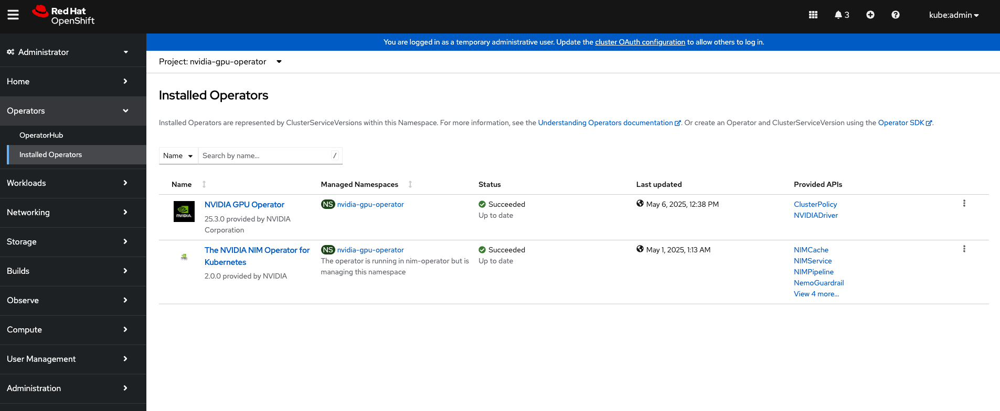
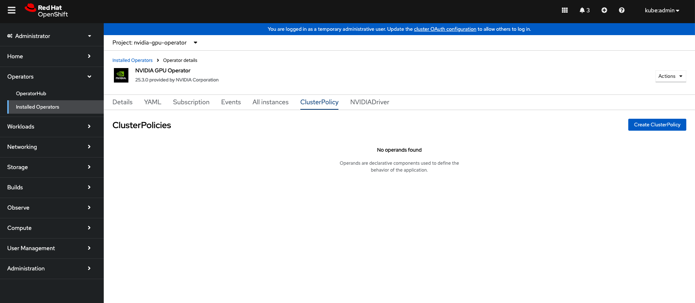
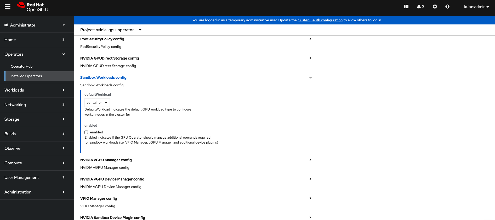
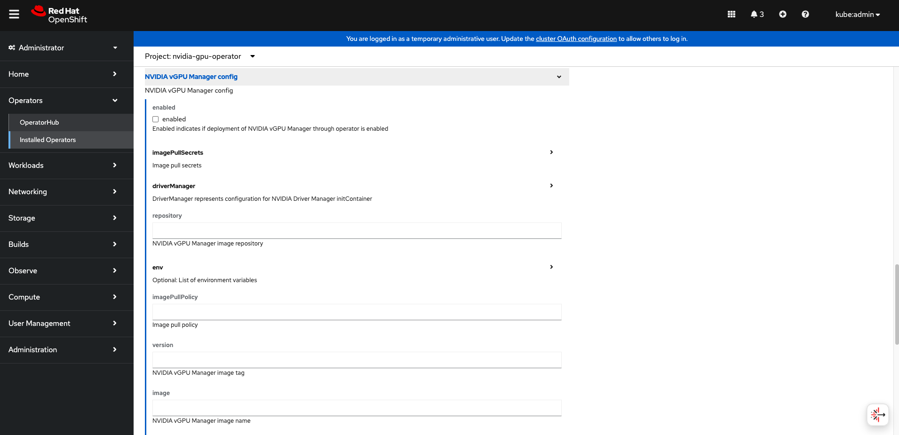

NVIDIA GPU Operator with OpenShift Virtualization#
Introduction#
There is a growing demand among Red Hat customers to use virtual GPUs (NVIDIA vGPU) with Red Hat OpenShift Virtualization. Red Hat OpenShift Virtualization is based on KubeVirt, a virtual machine (VM) management add-on to Kubernetes that allows you to run and manage VMs in a Kubernetes cluster. It eliminates the need to manage separate clusters for VM and container workloads, as both can now coexist in a single Kubernetes cluster. Red Hat OpenShift Virtualization is an OpenShift feature to run virtual machines (VMs) orchestrated by OpenShift (Kubernetes).
In addition to the GPU Operator being able to provision worker nodes for running GPU-accelerated containers, the GPU Operator can also be used to provision worker nodes for running GPU-accelerated virtual machines.
There are some different prerequisites required virtual machines with GPU(s) than running containers with GPU(s). The primary difference is the drivers required. For example, the datacenter driver is needed for containers, the vfio-pci driver is needed for GPU passthrough, and the NVIDIA vGPU Manager is needed for creating vGPU devices.
Configure Worker Nodes for GPU Operator components#
The GPU Operator can now be configured to deploy different software components on worker nodes depending on what GPU workload is configured to run on those nodes.
This is configured by adding a nvidia.com/gpu.workload.config label to the worker node with the value of container, vm-passthrough, or vm-vgpu depending on if you are planning to use vGPU or not.
The GPU Operator will use the label to determine which software components to deploy on the worker nodes.
Given the following node configuration:
Node A is configured to run containers.
Node B is configured to run VMs with Passthrough GPU.
Node C is configured to run VMs with vGPU.
Node A receives the following software components:
NVIDIA Datacenter Driver- To install the driver.NVIDIA Container Toolkit- To ensure containers can properly access GPUs.NVIDIA Kubernetes Device Plugin- To discover and advertise GPU resources to the kubelet.NVIDIA DCGM and DCGM Exporter- To monitor the GPU(s).
Node B receives the following software components:
VFIO Manager- Optional. To load vfio-pci and bind it to all GPUs on the node.Sandbox Device Plugin- Optional. To discover and advertise the passthrough GPUs to the kubelet.Sandbox Validator-Optional. Validates that Sandbox Device Plugin is working.
Node C receives the following software components:
NVIDIA vGPU Manager- To install the driver.NVIDIA vGPU Device Manager- To create vGPU devices on the node.Sandbox Device Plugin-Optional. To discover and advertise the vGPU devices to kubelet.Sandbox Validator-Optional. Validates that Sandbox Device Plugin is working.
Assumptions, constraints, and dependencies#
A worker node can run GPU-accelerated containers, or GPU accelerated VMs with GPU passthrough, or GPU accelerated-VMs with vGPU, but not a combination of any of them.
The cluster admin or developer has knowledge about their cluster ahead of time, and can properly label nodes to indicate what types of GPU workloads they will run.
Worker nodes running GPU accelerated VMs (with pGPU or vGPU) are assumed to be bare metal.
MIG-backed vGPUs are not supported.
The GPU Operator will not automate the installation of the vGPU guest driver inside KubeVirt VMs with vGPUs attached.
There are two separate device plugins – the NVIDIA k8s-device-plugin and the NVIDIA kubevirt-gpu-device-plugin.
KubeVirt/Openshift virtualization provides built-in device plugins. These are the default tested device plugins.
Prerequisites#
Starting with OpenShift Virtualization 4.12.3 and 4.13.0, set the
disableMDevConfigurationfeature gate:$ kubectl patch hyperconverged -n openshift-cnv kubevirt-hyperconverged --type='json' -p='[{"op": "add", "path": "/spec/featureGates/disableMDevConfiguration", "value": true}]'
Example Output
hyperconverged.hco.kubevirt.io/kubevirt-hyperconverged patchedIf planning to use NVIDIA vGPU, SR-IOV must be enabled in the BIOS if your GPUs are based on the NVIDIA Ampere architecture or later. Refer to the NVIDIA vGPU Documentation to ensure you have met all of the prerequisites for using NVIDIA vGPU.
Configure NVIDIA GPU Operator with OpenShift Virtualization#
After configuring the prerequisites, the high level workflow for using the NVIDIA GPU Operator with OpenShift Virtualization is as follows:
Label worker nodes based on the GPU workloads they will run.
Install the GPU Operator and set
sandboxWorkloads.enabled=true.
- If you are planning to deploy VMs with vGPU, the workflow is as follows:
- If you are planning to deploy VMs with GPU passthrough, the workflow is as follows:
Enabling the IOMMU driver on hosts#
To enable the IOMMU (Input-Output Memory Management Unit) driver in the kernel, create the MachineConfig object and add the kernel arguments.
Prerequisites#
Administrative privilege to a working OpenShift Container Platform cluster.
Intel or AMD CPU hardware.
Intel Virtualization Technology for Directed I/O extensions or AMD IOMMU in the BIOS (Basic Input/Output System) is enabled.
Procedure#
Create a
MachineConfigobject that identifies the kernel argument. The following example shows a kernel argument for an Intel CPU:apiVersion: machineconfiguration.openshift.io/v1 kind: MachineConfig metadata: labels: machineconfiguration.openshift.io/role: worker name: 100-worker-iommu spec: config: ignition: version: 3.2.0 kernelArguments: - intel_iommu=on # If you are using AMD CPU, include the following argument: # - amd_iommu=on
Create the new
MachineConfigobject:$ oc create -f 100-worker-kernel-arg-iommu.yaml
Verify that the new
MachineConfigobject was added:$ oc get machineconfig
Labeling worker nodes#
Use the following command to add a label to a worker node:
$ oc label node <node-name> --overwrite nvidia.com/gpu.workload.config=vm-vgpu
You can assign the following values to the label: container, vm-passthrough, and vm-vgpu.
The GPU Operator uses the value of this label to determine which operands to deploy.
If the node label nvidia.com/gpu.workload.config does not exist on the node, the GPU Operator assumes the default GPU workload configuration, container, and deploys the software components needed to support this workload type.
To change the default GPU workload configuration, set the following value in ClusterPolicy: sandboxWorkloads.defaultWorkload=<config>.
Building the vGPU Manager image#
Note
Building a vGPU Manager image is only required for NVIDIA vGPU. If you plan to use GPU Passthrough only, skip this section.
Use the following steps to build the vGPU Manager container and push it to a private registry.
Download the vGPU Software from the NVIDIA Licensing Portal.
Login to the NVIDIA Licensing Portal and navigate to the Software Downloads section.
The NVIDIA vGPU Software is located on the Driver downloads tab of the Software Downloads page.
Click the Download link for the Linux KVM complete vGPU package. Confirm that the Product Version column shows the vGPU version to install. Unzip the bundle to obtain the NVIDIA vGPU Manager for Linux file,
NVIDIA-Linux-x86_64-<version>-vgpu-kvm.run.
Note
NVIDIA AI Enterprise customers must use the
aie.run file for building the NVIDIA vGPU Manager image. Download theNVIDIA-Linux-x86_64-<version>-vgpu-kvm-aie.runfile instead, and rename it toNVIDIA-Linux-x86_64-<version>-vgpu-kvm.runbefore proceeding with the rest of the procedure. Refer to theInfrastructure Support Matrixunder section under the NVIDIA AI Enterprise Infra Release Branches for details on supported version number to use.Use the following steps to clone the driver container repository and build the driver image.
Open a terminal and clone the driver container image repository:
$ git clone https://gitlab.com/nvidia/container-images/driver $ cd driver
Change to the
vgpu-managerdirectory for your OS:$ cd vgpu-manager/rhel8
Copy the NVIDIA vGPU Manager from your extracted zip file:
$ cp <local-driver-download-directory>/*-vgpu-kvm.run ./Set the following environment variables:
PRIVATE_REGISTRY- Name of the private registry used to store the driver image.VERSION- The NVIDIA vGPU Manager version downloaded from the NVIDIA Software Portal.OS_TAG- This must match the Guest OS version. For RedHat OpenShift, specifyrhcos4.xwhere _x_ is the supported minor OCP version.
$ export PRIVATE_REGISTRY=my/private/registry VERSION=510.73.06 OS_TAG=rhcos4.11
Note
The recommended registry to use is the Integrated OpenShift Container Platform registry. For more information about the registry, see Accessing the registry.
Build the NVIDIA vGPU Manager image:
$ docker build \ --build-arg DRIVER_VERSION=${VERSION} \ -t ${PRIVATE_REGISTRY}/vgpu-manager:${VERSION}-${OS_TAG} .
Push the NVIDIA vGPU Manager image to your private registry:
$ docker push ${PRIVATE_REGISTRY}/vgpu-manager:${VERSION}-${OS_TAG}
Installing the NVIDIA GPU Operator#
Install the NVIDIA GPU Operator using the guidance at Installing the NVIDIA GPU Operator.
Note
When prompted to create a cluster policy follow the guidance Creating a ClusterPolicy for the GPU Operator.
Create the secret#
OpenShift has a secret object type which provides a mechanism for holding sensitive information such as passwords and private source repository credentials. Next you will create a secret object for storing your registry API key (the mechanism used to authenticate your access to the private container registry).
Note
Before you begin you will need to generate or use an existing API key for your private registry.
Navigate to Home > Projects and ensure the
nvidia-gpu-operatoris selected.In the OpenShift Container Platform web console, click Secrets from the Workloads drop down.
Click the Create Drop down.
Select Image Pull Secret.

Enter the following into each field:
Secret name: private-registry-secret
Authentication type: Image registry credentials
Registry server address: <private-registry_address>
Username: $oauthtoken
Password: <API-KEY>
Email: <YOUR-EMAIL>
Click Create.
A pull secret is created.
Creating a ClusterPolicy for the GPU Operator using the OpenShift Container Platform CLI#
As a cluster administrator, you can create a ClusterPolicy using the OpenShift Container Platform CLI. Create the cluster policy using the CLI:
Create the ClusterPolicy:
$ oc get csv -n nvidia-gpu-operator gpu-operator-certified.v22.9.0 -ojsonpath={.metadata.annotations.alm-examples} | jq .[0] > clusterpolicy.json
Modify the
clusterpolicy.jsonfile as follows:sandboxWorloads.enabled=true
vgpuManager.enabled=true
vgpuManager.repository=<path to private repository>
vgpuManager.image=vgpu-manager
vgpuManager.version=<driver version>
vgpuManager.imagePullSecrets={<name of image pull secret>}
The
vgpuManageroptions are only required if you want to use the NVIDIA vGPU. If you are only using GPU passthrough, these options should not be set.In general, the flag
sandboxWorkloads.enabledinClusterPolicycontrols whether the GPU Operator can provision GPU worker nodes for virtual machine workloads, in addition to container workloads. This flag is disabled by default, meaning all nodes get provisioned with the same software which enables container workloads, and thenvidia.com/gpu.workload.confignode label is not used.The term
sandboxingrefers to running software in a separate isolated environment, typically for added security (i.e. a virtual machine). We use the termsandbox workloadsto signify workloads that run in a virtual machine, irrespective of the virtualization technology used.Apply the changes:
$ oc apply -f clusterpolicy.jsonclusterpolicy.nvidia.com/gpu-cluster-policy created
The vGPU Device Manager, deployed by the GPU Operator, automatically creates vGPU devices which can be assigned to KubeVirt VMs. Without additional configuration, the GPU Operator creates a default set of devices on all GPUs. To learn more about how the vGPU Device Manager and configure which types of vGPU devices get created in your cluster, refer to vGPU Device Configuration.
Creating a ClusterPolicy for the GPU Operator using the OpenShift Container Platform Web Console#
As a cluster administrator, you can create a ClusterPolicy using the OpenShift Container Platform web console.
Navigate to Operators > Installed Operators and find your installed NVIDIA GPU Operator.
Under Provided APIs, click ClusterPolicy.
Click Create ClusterPolicy.
Expand the NVIDIA GPU/vGPU Driver config section.
Expand the Sandbox Workloads config section and select the checkbox to enable sandbox workloads.
In general, when sandbox workloads are enabled,
ClusterPolicycontrols whether the GPU Operator can provision GPU worker nodes for virtual machine workloads, in addition to container workloads. This flag is disabled by default, meaning all nodes get provisioned with the same software which enables container workloads, and thenvidia.com/gpu.workload.confignode label is not used.The term
sandboxingrefers to running software in a separate isolated environment, typically for added security (i.e. a virtual machine). We use the termsandbox workloadsto signify workloads that run in a virtual machine, irrespective of the virtualization technology used. * Click Create to create the ClusterPolicy.If you are planning to use NVIDIA vGPU, expand the NVIDIA vGPU Manager config section and fill in your desired configuration settings, including:
Select the enabled checkbox to enable the NVIDIA vGPU Manager.
Add your imagePullSecrets.
Under driverManager, fill in repository with the path to your private repository.
Under env, fill in image with
vgpu-managerand the version with your driver version.
If you are only using GPU passthrough, you dont need to fill this section out.
Click Create to create the ClusterPolicy.
The vGPU Device Manager, deployed by the GPU Operator, automatically creates vGPU devices which can be assigned to KubeVirt VMs. Without additional configuration, the GPU Operator creates a default set of devices on all GPUs. To learn more about the vGPU Device Manager and how to configure which types of vGPU devices get created in your cluster, refer to vGPU Device Configuration.
Add GPU Resources to the HyperConverged Custom Resource#
Update the HyperConverged custom resource so that all GPU and vGPU devices in your cluster are permitted and can be assigned to virtual machines.
Add GPU passthrough resources to the HyperConverged Custom Resource#
The following example permits the A10 GPU device, the device names for the GPUs on your cluster will likely be different.
Determine the resource names for the GPU devices:
$ oc get node cnt-server-2 -o json | jq '.status.allocatable | with_entries(select(.key | startswith("nvidia.com/"))) | with_entries(select(.value != "0"))'
Example Output
{ "nvidia.com/GA102GL_A10": "1" }
Determine the PCI device IDs for the GPUs.
You can search by device name in the PCI IDs database.
If you have host access to the node, you can list the NVIDIA GPU devices with a command like the following example:
$ lspci -nnk -d 10de:Example Output
65:00.0 3D controller [0302]: NVIDIA Corporation GA102GL [A10] [10de:2236] (rev a1) Subsystem: NVIDIA Corporation GA102GL [A10] [10de:1482] Kernel modules: nvidiafb, nouveau
Modify the
HyperConvergedcustom resource like the following partial examples.... spec: featureGates: disableMDevConfiguration: true permittedHostDevices: # Defines VM devices to import. pciHostDevices: # Include for GPU passthrough - externalResourceProvider: true pciDeviceSelector: 10DE:2236 resourceName: nvidia.com/GA102GL_A10 ...
Replace the values in the YAML as follows:
pciDeviceSelectorandresourceNameunderpciHostDevicesto correspond to your GPU type.Set
externalResourceProvider=trueto indicate that this resource is provided by an external device plugin, in this case thesandbox-device-pluginthat is deployed by the GPU Operator.
Refer to the KubeVirt user guide for more information on the configuration options.
Add vGPU resources to the HyperConverged Custom Resource#
The following example permits the A10-12Q vGPU device, the device names for the GPUs on your cluster will likely be different.
Determine the resource names for the GPU devices:
$ oc get node cnt-server-2 -o json | jq '.status.allocatable | with_entries(select(.key | startswith("nvidia.com/"))) | with_entries(select(.value != "0"))'
Example Output
{ "nvidia.com/NVIDIA_A10-12Q": "4" }
Determine the PCI device IDs for the GPUs.
You can search by device name in the PCI IDs database.
If you have host access to the node, you can list the NVIDIA GPU devices with a command like the following example:
$ lspci -nnk -d 10de:Example Output
65:00.0 3D controller [0302]: NVIDIA Corporation GA102GL [A10] [10de:2236] (rev a1) Subsystem: NVIDIA Corporation GA102GL [A10] [10de:1482] Kernel modules: nvidiafb, nouveau
Modify the
HyperConvergedcustom resource like the following partial examples.... spec: featureGates: disableMDevConfiguration: true permittedHostDevices: # Defines VM devices to import. mediatedDevices: # Include for vGPU - externalResourceProvider: true mdevNameSelector: NVIDIA A10-12Q resourceName: nvidia.com/NVIDIA_A10-12Q ...
Replace the values in the YAML as follows:
mdevNameSelectorandresourceNameundermediatedDevicesto correspond to your vGPU type.Set
externalResourceProvider=trueto indicate that this resource is provided by an external device plugin, in this case thesandbox-device-pluginthat is deployed by the GPU Operator.
Refer to the KubeVirt user guide for more information on the configuration options.
About Mediated Devices#
A physical device that is divided into one or more virtual devices. A vGPU is a type of mediated device (mdev); the performance of the physical GPU is divided among the virtual devices. You can assign mediated devices to one or more virtual machines (VMs), but the number of guests must be compatible with your GPU. Some GPUs do not support multiple guests.
Creating a virtual machine with GPU#
Assign GPU devices, either passthrough or vGPU, to virtual machines.
Prerequisites#
The GPU devices are configured in the
HyperConvergedcustom resource (CR).
Procedure#
Assign the GPU devices to a virtual machine (VM) by editing the
spec.domain.devices.gpusfield of theVirtualMachinemanifest:Example for GPU passthrough:
apiVersion: kubevirt.io/v1alpha3 kind: VirtualMachineInstance ... spec: domain: devices: gpus: - deviceName: nvidia.com/GA102GL_A10 name: gpu1 ...
Example for vGPU:
apiVersion: kubevirt.io/v1alpha3 kind: VirtualMachineInstance ... spec: domain: devices: gpus: - deviceName: nvidia.com/NVIDIA_A10-12Q name: gpu1 ...
deviceNameThe resource name associated with the GPU.nameA name to identify the device on the VM.
vGPU Device Configuration#
The vGPU Device Manager assists in creating vGPU devices on GPU worker nodes.
The vGPU Device Manager allows administrators to declaratively define a set of possible vGPU device configurations they would like applied to GPUs on a node. At runtime, they then point the vGPU Device Manager at one of these configurations, and vGPU Device Manager takes care of applying it.
The configuration file is created as a ConfigMap, and is shared across all worker nodes.
At runtime, a node label, nvidia.com/vgpu.config, can be used to decide which of these configurations to actually apply to a node at any given time.
If the node is not labeled, then the default configuration will be used.
For more information on this component and how it is configured, refer to the project README.
By default, the GPU Operator deploys a ConfigMap for the vGPU Device Manager, containing named configurations for all vGPU types supported by NVIDIA vGPU.
Users can select a specific configuration for a worker node by applying the nvidia.com/vgpu.config node label.
For example, labeling a node with nvidia.com/vgpu.config=A10-8Q would create 3 vGPU devices of type A10-8Q on all A10 GPUs on the node (note: 3 is the maximum number of A10-8Q devices that can be created per GPU).
If the node is not labeled, the default configuration will be applied.
The default configuration will create Q-series vGPU devices on all GPUs, where the amount of framebuffer memory per vGPU device is half the total GPU memory.
For example, the default configuration will create two A10-12Q devices on all A10 GPUs, two V100-8Q devices on all V100 GPUs, and two T4-8Q devices on all T4 GPUs.
If custom vGPU device configuration is desired, more than the default ConfigMap provides, you can create your own ConfigMap:
$ oc create configmap custom-vgpu-config -n gpu-operator --from-file=config.yaml=/path/to/file
And then configure the GPU Operator to use it by setting vgpuDeviceManager.config.name=custom-vgpu-config.
Apply a New vGPU Device Configuration#
Apply a specific vGPU device configuration on a per-node basis by setting the nvidia.com/vgpu.config node label. It is recommended to set this node label prior to installing the GPU Operator if you do not want the default configuration applied.
Switching vGPU device configuration after one has been successfully applied assumes that no VMs with vGPU are currently running on the node. Any existing VMs will have to be shutdown/migrated first.
To apply a new configuration after GPU Operator install, simply update the nvidia.com/vgpu.config node label.
Let’s run through an example on a system with two A10 GPUs.
$ nvidia-smi -L GPU 0: NVIDIA A10 (UUID: GPU-ebd34bdf-1083-eaac-2aff-4b71a022f9bd) GPU 1: NVIDIA A10 (UUID: GPU-1795e88b-3395-b27b-dad8-0488474eec0c)
After installing the GPU Operator as detailed in the previous sections and without labeling the node with nvidia.com/vgpu.config, the default vGPU config get applied – four A10-12Q devices get created (two per GPU):
$ oc get node cnt-server-2 -o json | jq '.status.allocatable | with_entries(select(.key | startswith("nvidia.com/"))) | with_entries(select(.value != "0"))' { "nvidia.com/NVIDIA_A10-12Q": "4" }
If instead you want to create A10-4Q devices, we can label the node like such:
$ oc label node <node-name> --overwrite nvidia.com/vgpu.config=A10-4Q
After the vGPU Device Manager finishes applying the new configuration, all GPU Operator pods should return to the Running state.
$ oc get pods -n gpu-operator NAME READY STATUS RESTARTS AGE ... nvidia-sandbox-device-plugin-daemonset-brtb6 1/1 Running 0 10s nvidia-sandbox-validator-ljnwg 1/1 Running 0 10s nvidia-vgpu-device-manager-8mgg8 1/1 Running 0 30m nvidia-vgpu-manager-daemonset-fpplc 1/1 Running 0 31m
You should now see 12 A10-4Q devices on the node, as 6 A10-4Q devices can be created per A10 GPU.
$ oc get node cnt-server-2 -o json | jq '.status.allocatable | with_entries(select(.key | startswith("nvidia.com/"))) | with_entries(select(.value != "0"))' { "nvidia.com/NVIDIA_A10-4Q": "12" }